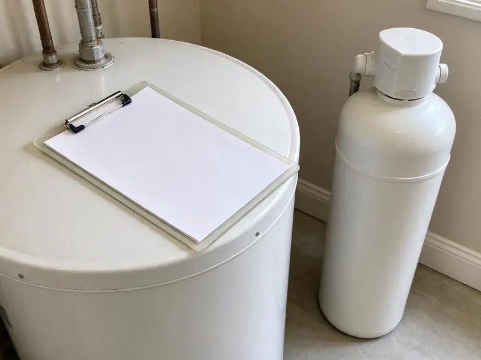
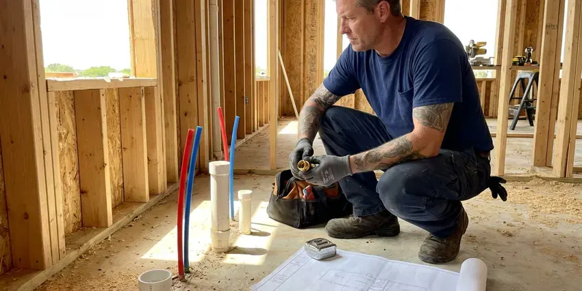

Repipe Specialists in Albuquerque, NM
GVK Plumbing offers comprehensive repiping solutions for homes across Albuquerque, NM. We upgrade your plumbing for long-term performance.
- Water Restored Every Night
- Durable Pipe Materials
- Durable Pipe Materials
- Expert Plumbing Crews

Expert Repipe Specialists Are Here for You in Albuquerque, NM.
Call today and we will inspect your pipes and give you a clear written price.
Trusted Repipe Specialists in Albuquerque, NM for Lasting Plumbing Solutions
As dedicated repipe specialists, GVK Plumbing provides complete plumbing system overhauls. We ensure your home in Albuquerque, NM has a modern, reliable, and leak-free water delivery system.
Our expertise includes:
- Adherence to all New Mexico plumbing codes and local Albuquerque regulations.
- Full home water and drain line replacement
- Type L copper repipes for homeowners who prefer metal piping

Additional Plumbing Maintenance Services in Albuquerque, NM
Our maintenance and specialty plumbing services in Albuquerque, NM catch small problems before they become emergencies.


Customers
Why Choose GVK Plumbing for Repipe Specialists in Albuquerque, NM?
We are committed to delivering quality repiping results that stand the test of time. Our team makes sure your new plumbing system provides dependable service for decades.
- Clean Job Sites, We protect floors and furniture and clean up every day.
- New Mexico Experience, We know how local climate and soil conditions affect your plumbing, contributing to slab leaks and pipe corrosion.
- Experienced Crews, Our technicians are highly trained in all aspects of residential and commercial repiping techniques.
Citywide Coverage
GVK Plumbing serves every neighborhood in Albuquerque, providing expert repiping services wherever you are located. Our local teams are familiar with the various housing styles and common plumbing issues across the entire metro area.
Experienced Team
The GVK Plumbing team brings years of focused experience to every repiping job. Each plumber is licensed and skilled in the latest techniques for installing both PEX and copper piping, ensuring your repipe is completed to the highest standards of craftsmanship and durability.
Safety-First Approach
We pull permits for every repipe and schedule required inspections with your local building department. Lines are pressure tested before walls are closed up.
Trusted Certified Albuquerque Plumbing Services Professionals
At GVK Plumbing, we take pride in providing licensed, certified plumbing services throughout Albuquerque, NM. Backed by recognized industry credentials, our experienced plumbers combine technical skill with genuine customer care. Whether it is repair, installation, or maintenance, we follow strict safety and quality standards to deliver lasting results you can trust.
Call Us Now PHCC Plumbing Contractor Recognition
PHCC Plumbing Contractor Recognition Better Business Bureau (BBB) Accreditation
Better Business Bureau (BBB) Accreditation Angi Certified Pro
Angi Certified Pro ISO 9001 Quality Management Certification
ISO 9001 Quality Management CertificationDependable Repipe Specialists Services in Albuquerque, NM
Repipe Costs Versus Leak Repairs in Albuquerque, NM
A whole-home PEX repipe for an average home often runs $5,000 to $12,000, with copper usually costing more. A single slab leak repair can run $1,000 to $4,000 including access and restoration. After two or three leaks, a repipe often pays for itself. We give you a side-by-side comparison so you can make the call.

PEX Pipe Replacement in Albuquerque, NM
PEX (cross-linked polyethylene) is a flexible, cost-effective, and highly durable piping material that's gaining popularity for repiping projects. GVK Plumbing specializes in PEX pipe replacement in Albuquerque, NM, offering a system that resists freezing, corrosion, and scale buildup. Its flexibility allows for fewer connections, reducing potential leak points. PEX also significantly dampens water hammer noise, providing a quieter plumbing system for your home.
Repiping for Hard Water Areas in Albuquerque, NM
Water across New Mexico is generally hard and mineral-heavy, so scale builds up quickly in water heaters, faucets and appliance valves. Water in many areas contains minerals that contribute to scale buildup inside pipes over time. This hard water scale narrows the pipe's diameter, reduces water pressure, and can speed up corrosion, especially in galvanized and older copper pipes. Our repipe specialists consider local water conditions, recommending materials like PEX or properly installed copper that are more resistant to mineral accumulation, ensuring a longer-lasting plumbing system.
Commercial Repiping Services in Albuquerque, NM
Commercial properties in Albuquerque, NM have specific demands for their plumbing systems, often requiring larger pipe diameters and more complex layouts. GVK Plumbing provides specialized commercial repiping services to help your business operates smoothly without plumbing interruptions. We understand the importance of minimal downtime and work efficiently to upgrade your facility's water lines with robust materials like copper or high-grade PEX, meeting all commercial building codes and operational requirements.
Galvanized Pipe Replacement in Albuquerque, NM
Many older homes in Albuquerque, NM still have galvanized steel pipes, which are vulnerable to corrosion, rust, and mineral buildup. This leads to low water pressure, discolored water, and eventual leaks. Our team specializes in the complete removal and replacement of these outdated systems with modern PEX or copper piping. This upgrade not only resolves existing problems but also greatly improves water quality and flow, boosting your home's value and plumbing reliability for decades to come.
Whole-Home Copper Repiping in Albuquerque
Copper piping offers exceptional durability, corrosion resistance, and a long lifespan, making it a premium choice for many homeowners in Albuquerque. While the upfront cost is higher than PEX, copper provides superior rigidity and resistance to UV light if exposed. Our team carefully solders each joint, creating a leak-proof and robust plumbing system that can withstand the test of time, including changing temperatures and local water conditions. Copper also naturally inhibits bacterial growth, contributing to cleaner water.
Slab Leak Reroutes in Albuquerque
When one line under the slab leaks, a full repipe is not always the first step. We can reroute a single hot or cold branch overhead and abandon the leaking pipe in the slab. This is a good option for newer homes or a first leak. If the home has had multiple leaks, we will explain why a full repipe may save money.

Emergency Repipe and Leak Repair in Albuquerque
While a full repipe is a planned project, sometimes a major pipe burst or multiple severe leaks can call for immediate action. Our repipe specialists in Albuquerque are equipped to handle emergency situations, providing temporary fixes and assessing the need for a more complete repiping solution. We can quickly isolate damaged sections and offer options for immediate repair or a phased repiping approach to restore your water service safely and efficiently, preventing extensive water damage.
Local Repipe Specialists Near Me in Albuquerque, NM
Our local presence means faster response times and a team familiar with the specific building codes and common plumbing issues in Albuquerque, NM. Trust the experts who know your area best for your repipe.
When searching for 'repipe specialists near me' in Albuquerque, NM, you want a company that understands local homes and plumbing needs. GVK Plumbing is deeply rooted in the community, providing tailored repiping solutions for our neighbors.
GVK Plumbing at a Glance
- Fully licensed plumbing team covering Albuquerque, NM
- 24/7 emergency service with same-day scheduling
- Clear written estimates, no hidden fees
- 4.8-star rated by 320+ New Mexico customers
Albuquerque Map
Albuquerque Information
- Population
- 560,274
- Area codes
- 505/575/505
- Service area
- Albuquerque and communities within 40 miles
- Nearby
- North Valley, South Valley, Rio Rancho, Los Lunas
Repiping is a smart upgrade for many homes in Albuquerque, NM, where water chemistry, ground movement and aging pipe all take a toll on the original plumbing. Water across New Mexico is generally hard and mineral-heavy, so scale accumulates quickly in water heaters, faucets and appliance valves.
Expert Services
Trust our professionals for reliable GVK Plumbing solutions in Albuquerque, NM.
Our Specialized Plumbing Services in Albuquerque, NM
At GVK Plumbing, we provide a complete range of plumbing services across Albuquerque, NM. From leak detection to full system installations, our team ensures fast, precise, and affordable service for both residential and commercial properties. Explore our core services below:


How Our Repipe Specialists Process Works in Albuquerque, NM
Our repipe process is planned in detail so you know what happens each day.
Request a Quote
Call (505) 581-4975 to schedule a free repipe inspection. We review your pipes, attic and fixtures and give you a written price.
Repipe and Inspect
Our crew installs new lines, connects every fixture and pressure tests the system. Water is restored at the end of most work days and the city inspects the work.
Patch and Walkthrough
We patch and texture all openings and clean up thoroughly. Then we walk through the home with you and explain your warranty.
Frequently Asked Questions About Repipe Specialists in Albuquerque
The cost of a whole-home repipe in Albuquerque, NM can vary significantly depending on the size of your home, the number of fixtures, and the chosen piping material, such as copper or PEX. Generally, you can expect to pay anywhere from $4,000 to $15,000 or more. We provide a detailed, upfront quote after a careful assessment of your specific home and needs.
GVK Plumbing stands behind our repiping work with a comprehensive warranty on both labor and materials. Specific warranty details will be provided with your estimate, but generally, you can expect a multi-year warranty covering defects and leaks. We use only quality, warrantied piping materials from trusted brands.
Common signs you need repiping include persistent low water pressure throughout your home, discolored or rusty-looking water, frequent pipe leaks, visible corrosion on exposed pipes, and a metallic taste or odor in your water. If your home is over 50 years old with original pipes, it's a good idea to have them inspected, especially if they are galvanized or polybutylene.
A whole-home repipe requires permits, pressure testing and code knowledge. Most homeowners are better served by a licensed crew that can finish fast and pass inspection.
While fixing individual leaks might seem cheaper in the short term, it's often a temporary solution for an aging plumbing system. If you're experiencing multiple leaks, low pressure, or discolored water, it points to widespread pipe wear. Repiping addresses the root cause by replacing the entire system, providing a long-term, dependable solution and preventing future problems.
Common signs include discolored or rusty water, low water pressure at multiple fixtures, frequent leaks or pinhole leaks, and strange noises coming from your pipes. If your home has galvanized steel or polybutylene pipes, a repipe is often a proactive and wise investment to prevent future problems.
Both PEX and copper are excellent choices for repiping in New Mexico, each with distinct advantages. PEX is more flexible, resistant to freezing, and generally less expensive, making it a great option for many homes. Copper is highly durable, has a longer lifespan, and naturally inhibits bacterial growth, but costs more. We can discuss which material best suits your budget and needs.
While some minor wall and ceiling access is usually necessary for a repipe, our repipe specialists use techniques that limit damage. We carefully cut access points and patch them neatly after the new pipes are installed. We aim to keep disruptions to your home's finishes as minimal as possible during the process.
What People Are Saying About Our Plumbing Experts?

Robert G.
The trenchless sewer replacement saved our front yard. They walked us through the camera inspection footage first so we knew exactly what we were paying for.
Sewer Line Replacement · Santa Fe, NMJames P.
Our commercial plumbing system had a leak under the sink, and GVK Plumbing handled it professionally. The plumbers arrived quickly and restored everything without disruption to our customers.
Commercial Plumbing · South Valley, NM
Mark T.
When our office needed drain cleaning, GVK Plumbing provided quick, reliable service. The plumber arrived on time and made sure every drain flowed perfectly before leaving. Very satisfied.
Drain Cleaning · South Valley, NM
Patricia H.
We had a slab leak that two other companies could not find. GVK Plumbing located it in under an hour, explained our options, and the price matched the quote to the dollar.
Slab Leak Repair · South Valley, NM
Sofia M.
Two new toilets installed in one visit, no mess left behind, and the tech even adjusted a faucet he noticed was dripping. Fair pricing and really friendly.
Toilet Installation · Albuquerque, NMLaura S.
I scheduled a water heater replacement, and the team made the process smooth and affordable. The new unit works perfectly, and they cleaned up after completing the job.
Water Heater Replacement · Los Lunas, NM